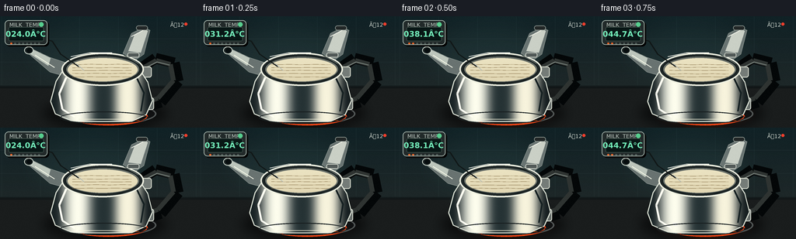
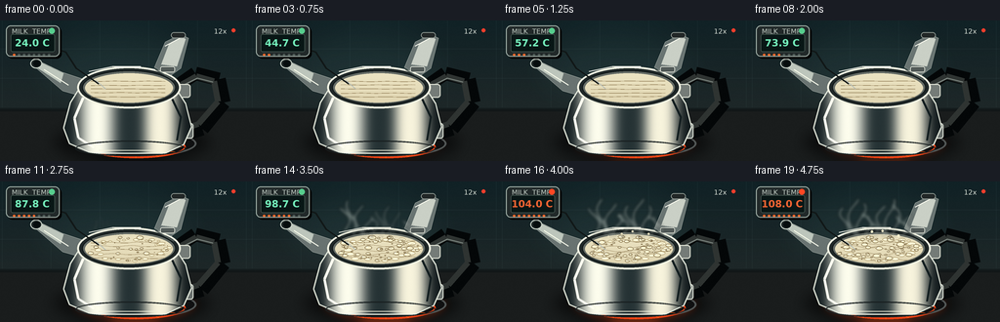
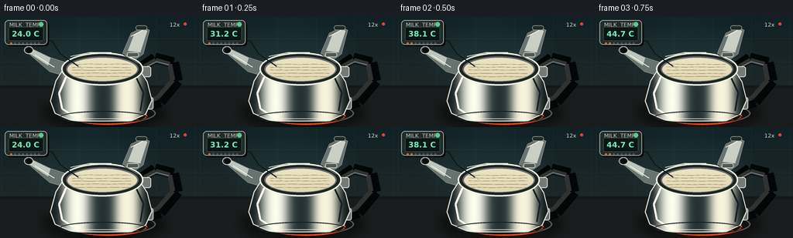
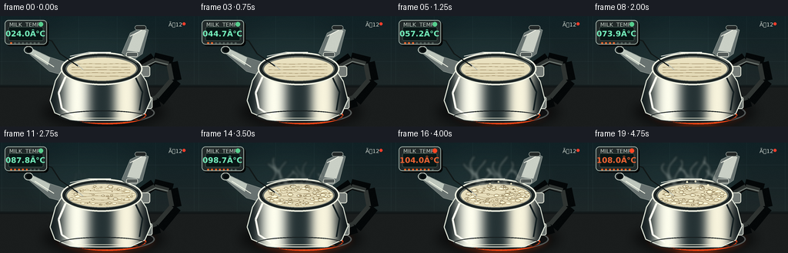
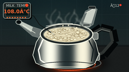

CODING AGENTS AS PIXEL WORLD MODELS
traex/GPT-5.6-Sol · phygen_107
点击播放 · 原生 RGB 像素
逐轮保存的候选
回放视频、检查图与代码变化。
每份候选均可单独播放。实际图片检查记录在下方工具轨迹中。
候选 01播放与检查图
点击播放 · 原生 RGB 像素


展开代码变化
--- 上一保存版本
+++ 本次保存版本
@@ -0,0 +1,278 @@
+from pathlib import Path
+import math, random
+import numpy as np
+from PIL import Image, ImageDraw, ImageFont, ImageFilter
+import artifact_io
+
+W,H,N,S = 256,144,20,4
+SW,SH=W*S,H*S
+ROOT=Path(__file__).resolve().parent
+random.seed(107)
+
+# Fonts are only used for the small instrument readout.
+def font(size,bold=False):
+ choices = [
+ '/usr/share/fonts/truetype/dejavu/DejaVuSans-Bold.ttf' if bold else '/usr/share/fonts/truetype/dejavu/DejaVuSans.ttf',
+ '/usr/share/fonts/truetype/liberation2/LiberationSans-Bold.ttf' if bold else '/usr/share/fonts/truetype/liberation2/LiberationSans-Regular.ttf'
+ ]
+ for p in choices:
+ if Path(p).exists(): return ImageFont.truetype(p,size*S)
+ return ImageFont.load_default()
+
+F10,F8,F7=font(10,True),font(8,True),font(7,False)
+
+def sc(v):
+ if isinstance(v,(tuple,list)): return tuple(int(round(x*S)) for x in v)
+ return int(round(v*S))
+def poly(d, pts, **kw): d.polygon([(sc(x),sc(y)) for x,y in pts],**kw)
+def ellipse(d, box, **kw): d.ellipse(sc(box),**kw)
+def line(d, pts, **kw):
+ if 'width' in kw: kw['width']=sc(kw['width'])
+ d.line([(sc(x),sc(y)) for x,y in pts],**kw)
+def rr(d, box, radius, **kw): d.rounded_rectangle(sc(box),radius=sc(radius),**kw)
+
+def composite_shape(base, layer, mask):
+ return Image.composite(layer,base,mask)
+
+def gradient(size, top, bot, horizontal=False):
+ w,h=size
+ a=np.zeros((h,w,3),np.uint8)
+ n=w if horizontal else h
+ ramp=np.linspace(0,1,n)
+ vals=np.array(top)[None,:]*(1-ramp[:,None])+np.array(bot)[None,:]*ramp[:,None]
+ if horizontal: a[:]=vals[None,:,:]
+ else: a[:]=vals[:,None,:]
+ return Image.fromarray(a)
+
+def draw_background():
+ # Dark teal tiled backsplash and warm charcoal countertop.
+ im=gradient((SW,SH),(17,34,38),(38,43,42))
+ d=ImageDraw.Draw(im,'RGBA')
+ # backsplash/counter boundary
+ d.rectangle((0,sc(91),SW,SH),fill=(26,29,29,255))
+ d.rectangle((0,sc(89),SW,sc(93)),fill=(8,15,17,110))
+ # subtle tile seams
+ for x in [2,52,102,152,202,252]:
+ d.line((sc(x),0,sc(x),sc(89)),fill=(112,151,150,22),width=sc(.5))
+ for y in [29,59,89]:
+ d.line((0,sc(y),SW,sc(y)),fill=(112,151,150,25),width=sc(.6))
+ # reflected pools of light
+ glow=Image.new('RGBA',(SW,SH),(0,0,0,0)); gd=ImageDraw.Draw(glow)
+ gd.ellipse(sc((28,3,210,98)),fill=(74,126,124,35))
+ glow=glow.filter(ImageFilter.GaussianBlur(sc(20)))
+ im=Image.alpha_composite(im.convert('RGBA'),glow)
+ return im
+
+BG=draw_background()
+
+# Stable bubble identities; each receives phase/start/position/size.
+rng=random.Random(3217)
+bubbles=[]
+for i in range(58):
+ # uniform in ellipse via polar mapping
+ ang=rng.random()*math.tau; rad=math.sqrt(rng.random())
+ x=132+42*rad*math.cos(ang); y=69+13*rad*math.sin(ang)
+ bubbles.append((x,y,rng.uniform(.75,3.8),rng.random()*math.tau,rng.uniform(0.12,0.78)))
+
+# Foam islands around rim, kept coherent frame to frame.
+foam=[]
+for i in range(33):
+ ang=rng.random()*math.tau
+ r=rng.uniform(.70,1.0)
+ foam.append((132+43*r*math.cos(ang),69+13*r*math.sin(ang),rng.uniform(1.4,4.2),rng.random()*6.2))
+
+def draw_frame(fi):
+ t=fi/(N-1)
+ # Fast warming in a timelapse; hits boiling near midpoint and overshoots to 108 C.
+ temp=24+84*(1-(1-t)**1.65)
+ boil=max(0,min(1,(temp-78)/25))
+ vigorous=max(0,min(1,(temp-97)/8))
+ im=BG.copy()
+ d=ImageDraw.Draw(im,'RGBA')
+
+ # Cast shadow and stove burner under kettle.
+ shadow=Image.new('RGBA',(SW,SH),(0,0,0,0)); sd=ImageDraw.Draw(shadow)
+ sd.ellipse(sc((55,105,215,145)),fill=(0,0,0,145))
+ shadow=shadow.filter(ImageFilter.GaussianBlur(sc(7)))
+ im=Image.alpha_composite(im,shadow); d=ImageDraw.Draw(im,'RGBA')
+ # burner glow increases and subtly pulses
+ heat=max(0,min(1,t*1.5))
+ glow=Image.new('RGBA',(SW,SH),(0,0,0,0)); gd=ImageDraw.Draw(glow)
+ gd.ellipse(sc((73,108,203,145)),fill=(244,73,22,int(65*heat)))
+ gd.ellipse(sc((88,116,190,141)),outline=(255,102,28,int(210*heat)),width=sc(2.1))
+ glow=glow.filter(ImageFilter.GaussianBlur(sc(5)))
+ im=Image.alpha_composite(im,glow); d=ImageDraw.Draw(im,'RGBA')
+ ellipse(d,(75,112,201,140),fill=(16,17,18,255),outline=(83,88,87,220),width=sc(2))
+ ellipse(d,(89,118,190,141),outline=(238,67,20,int(160*heat)),width=sc(2))
+ for a in np.linspace(0,math.tau,12,endpoint=False):
+ x1,y1=139+41*math.cos(a),129+10*math.sin(a)
+ x2,y2=139+47*math.cos(a),129+12*math.sin(a)
+ line(d,[(x1,y1),(x2,y2)],fill=(255,99,24,int(170*heat)),width=.8)
+
+ # Handle: thick black arch behind kettle, with steel mounts.
+ line(d,[(177,70),(200,54),(224,60),(229,84),(207,111),(187,117)],fill=(4,7,8,255),width=14)
+ line(d,[(178,70),(201,57),(219,62),(223,83),(203,106),(187,112)],fill=(47,52,50,255),width=6)
+ line(d,[(180,70),(202,59),(218,63)],fill=(121,130,124,75),width=1.2)
+ rr(d,(179,65,195,79),3,fill=(117,124,120,255),outline=(225,228,214,180),width=sc(1))
+ rr(d,(181,105,198,121),3,fill=(105,112,109,255),outline=(220,225,214,170),width=sc(1))
+
+ # Spout behind body: angular steel form leading left.
+ poly(d,[(88,61),(64,53),(39,41),(35,47),(64,72),(89,79)],fill=(105,115,113,255),outline=(222,229,218,200))
+ poly(d,[(65,54),(40,42),(36,47),(62,64)],fill=(189,198,188,210))
+ ellipse(d,(31,39,43,49),fill=(30,38,38,255),outline=(209,219,208,240),width=sc(1))
+ ellipse(d,(34,41,41,47),fill=(7,13,14,255))
+ line(d,[(45,50),(70,66)],fill=(244,247,231,120),width=1)
+
+ # Kettle body, with a smooth metallic gradient clipped to silhouette.
+ bodymask=Image.new('L',(SW,SH),0); md=ImageDraw.Draw(bodymask)
+ bodypts=[(84,65),(177,65),(190,85),(196,109),(188,127),(169,136),(94,136),(71,126),(65,110),(72,84)]
+ md.polygon([(sc(x),sc(y)) for x,y in bodypts],fill=255)
+ metal=gradient((SW,SH),(220,224,213),(61,69,69),horizontal=True).convert('RGBA')
+ # broad vertical tonal bands make stainless steel read correctly
+ mt=ImageDraw.Draw(metal,'RGBA')
+ mt.rectangle(sc((0,0,80,144)),fill=(24,34,36,100))
+ mt.rectangle(sc((89,0,111,144)),fill=(255,255,239,95))
+ mt.rectangle(sc((119,0,146,144)),fill=(38,51,53,85))
+ mt.rectangle(sc((151,0,177,144)),fill=(248,244,221,65))
+ mt.rectangle(sc((184,0,256,144)),fill=(19,27,29,120))
+ metal=metal.filter(ImageFilter.GaussianBlur(sc(5)))
+ im=Image.composite(metal,im,bodymask)
+ d=ImageDraw.Draw(im,'RGBA')
+ line(d,bodypts+[bodypts[0]],fill=(225,231,218,210),width=1.2)
+ # body highlight/reflections
+ line(d,[(85,79),(76,100),(80,120),(96,130)],fill=(255,255,242,112),width=2.4)
+ line(d,[(175,78),(185,99),(181,123)],fill=(19,30,32,120),width=2)
+ ellipse(d,(77,123,190,139),outline=(25,32,33,190),width=sc(1.2))
+ line(d,[(101,133),(161,133)],fill=(242,241,218,90),width=.8)
+
+ # Open neck and dark lip. The surface is an ellipse, fixed-camera but agitated.
+ ellipse(d,(79,47,185,90),fill=(31,39,39,255),outline=(236,239,224,255),width=sc(2.0))
+ ellipse(d,(84,51,180,86),fill=(101,108,102,255),outline=(16,24,25,240),width=sc(1))
+ # liquid surface layer and ellipse mask
+ surf=Image.new('RGBA',(SW,SH),(0,0,0,0)); sm=Image.new('L',(SW,SH),0)
+ ImageDraw.Draw(sm).ellipse(sc((87,54,177,84)),fill=255)
+ # warmer creamy color and concentric movement
+ milk=gradient((SW,SH),(255,251,222),(205,190,150)).convert('RGBA')
+ milk=Image.composite(milk,surf,sm)
+ im=Image.alpha_composite(im,milk); d=ImageDraw.Draw(im,'RGBA')
+ # rolling surface contours
+ for j in range(5):
+ phase=fi*.72+j*1.73
+ yy=62+j*4.0+math.sin(phase)*(.3+1.1*vigorous)
+ xs=[]
+ for k in range(21):
+ x=93+k*3.8
+ y=yy+math.sin(k*.7+phase)*(0.18+1.0*boil)
+ # ellipse-safe enough; short lines
+ xs.append((x,y))
+ line(d,xs,fill=(133,111,71,int(20+45*boil)),width=.45)
+
+ # Edge skin/foam appears first at simmer and thickens.
+ for x,y,r,p in foam:
+ local=max(0,min(1,(boil-0.08-p*.012)*1.8))
+ if local<=0: continue
+ wob=math.sin(fi*.8+p)*vigorous
+ rradius=r*(.65+.45*local)
+ ellipse(d,(x-rradius,y-rradius*.43+wob*.3,x+rradius,y+rradius*.43+wob*.3),
+ fill=(255,251,220,int(105+130*local)),outline=(171,150,104,int(100+80*local)),width=sc(.45))
+
+ # Surface bubbles: coherent, expanding/contracting, increasingly numerous.
+ for i,(x,y,r,p,thresh) in enumerate(bubbles):
+ active=boil-thresh
+ if active <= -0.08: continue
+ cyc=(fi*.31+p)%1.0
+ strength=max(0,min(1,(active+.08)*4))
+ # bubbles swell then collapse over a short cycle
+ pulse=math.sin(math.pi*cyc)**0.55
+ rad=r*(.30+.80*pulse)*strength
+ x2=x+math.sin(p+fi*.57)*vigorous*1.6
+ y2=y+math.cos(p*1.7+fi*.43)*vigorous*.65
+ ellipse(d,(x2-rad,y2-rad*.56,x2+rad,y2+rad*.56),fill=(245,238,201,int(30+65*strength)),outline=(115,94,57,int(80+120*strength)),width=sc(.55))
+ if rad>1.2:
+ ellipse(d,(x2-rad*.52,y2-rad*.34,x2-rad*.12,y2-rad*.05),fill=(255,255,239,int(130*strength)))
+
+ # Central boiling domes and splashes at/above 100 C.
+ if vigorous>0:
+ for j in range(7):
+ p=j*0.91+fi*.78
+ x=128+math.sin(j*2.42)*26+math.sin(p)*2
+ y=69+math.cos(j*1.71)*7
+ r=(1.2+2.8*(.5+.5*math.sin(p)))*vigorous
+ ellipse(d,(x-r,y-r*.55,x+r,y+r*.55),fill=(255,247,211,170),outline=(116,94,56,170),width=sc(.6))
+ # small milk droplets briefly lifting off the surface
+ for j in range(4):
+ phase=(fi*.37+j*.29)%1
+ x=111+j*13+math.sin(j*3)*5
+ y=58-8*math.sin(math.pi*phase)*vigorous
+ r=.55+vigorous*.65
+ ellipse(d,(x-r,y-r,x+r,y+r),fill=(255,246,210,int(210*vigorous)))
+
+ # Rim glints redrawn atop liquid.
+ ellipse(d,(79,47,185,90),outline=(243,244,226,235),width=sc(1.35))
+ line(d,[(91,52),(115,47),(144,47)],fill=(255,255,244,210),width=1.0)
+ line(d,[(159,50),(178,61)],fill=(86,96,92,230),width=1.2)
+
+ # Hinged lid held open behind the kettle, avoiding obstruction of the milk.
+ # Oval lid angled upright at upper-right.
+ poly(d,[(158,48),(169,22),(185,14),(193,18),(185,49),(175,56)],fill=(105,116,114,255),outline=(225,231,220,230))
+ poly(d,[(165,45),(173,24),(187,17),(190,19),(181,47)],fill=(202,208,198,175))
+ line(d,[(169,26),(186,17)],fill=(255,255,240,150),width=1)
+ rr(d,(175,12,190,18),3,fill=(34,39,39,255),outline=(157,166,159,200),width=sc(.7))
+ rr(d,(164,47,179,53),2,fill=(82,90,88,255),outline=(229,233,221,180),width=sc(.7))
+
+ # Steam, layered after all objects. Starts near boiling and grows into twisting plumes.
+ steam=max(0,min(1,(temp-82)/23))
+ if steam>0:
+ st=Image.new('RGBA',(SW,SH),(0,0,0,0)); sdraw=ImageDraw.Draw(st,'RGBA')
+ for j in range(10):
+ strength=max(0,min(1,(steam-j*.035)*1.35))
+ if strength<=0: continue
+ base_x=96+j*7.3
+ pts=[]
+ height=(14+23*strength)*(0.8+0.25*math.sin(j*1.3))
+ for q in range(14):
+ u=q/13
+ x=base_x+math.sin(u*5.2+j*1.47+fi*.37)*(2.2+5*u)*strength + fi*.10
+ y=56-u*height
+ pts.append((sc(x),sc(y)))
+ sdraw.line(pts,fill=(239,247,237,int(30+75*strength)),width=sc(1.0+2.1*strength))
+ st=st.filter(ImageFilter.GaussianBlur(sc(1.7)))
+ im=Image.alpha_composite(im,st)
+
+ d=ImageDraw.Draw(im,'RGBA')
+ # Temperature instrument: fixed overlay on backsplash, with probe wire to milk.
+ # wire/probe drawn behind display but above scene
+ line(d,[(53,28),(67,32),(78,49),(101,65)],fill=(17,23,23,230),width=1.6)
+ line(d,[(98,61),(108,70)],fill=(182,190,183,240),width=1.2)
+ # tiny display drop shadow and body
+ rr(d,(8,7,63,39),5,fill=(0,0,0,85))
+ rr(d,(6,5,61,37),5,fill=(34,42,42,245),outline=(159,174,166,230),width=sc(1))
+ rr(d,(11,14,56,32),2,fill=(9,23,22,255),outline=(87,109,100,180),width=sc(.6))
+ # top label, status dot
+ d.text((sc(12),sc(7)),"MILK TEMP",font=F7,fill=(194,206,197,230))
+ ellipse(d,(50,7.5,56,13.5),fill=(255 if temp>=100 else 87, 72 if temp>=100 else 206, 36 if temp>=100 else 142,255))
+ txt=f"{temp:05.1f}°C"
+ # centered digital-like readout
+ bb=d.textbbox((0,0),txt,font=F10)
+ d.text((sc(33)-(bb[2]-bb[0])//2,sc(17)),txt,font=F10,fill=(244,100,51,255) if temp>=100 else (116,239,187,255))
+ # progression LEDs make timelapse legible without over-labeling
+ for k in range(8):
+ active=k <= round(t*7)
+ x=13+k*5.1
+ ellipse(d,(x,34,x+2.7,36),fill=(246,105,42,230) if active else (79,91,87,150))
+
+ # A subtle REC/timelapse marker.
+ ellipse(d,(237,8,241,12),fill=(240,62,44,220))
+ d.text((sc(219),sc(7)),"Ã12",font=F7,fill=(218,225,216,200))
+
+ # Fine grain for a photographic, non-flat finish.
+ arr=np.asarray(im.convert('RGB')).astype(np.int16)
+ nr=np.random.default_rng(900+fi).normal(0,0.9,arr.shape[:2])[:,:,None]
+ arr=np.clip(arr+nr,0,255).astype(np.uint8)
+ out=Image.fromarray(arr).resize((W,H),Image.Resampling.LANCZOS)
+ return np.array(out,dtype=np.uint8)
+
+frames=np.stack([draw_frame(i) for i in range(N)],axis=0)
+assert frames.shape==(20,144,256,3) and frames.dtype==np.uint8
+artifact_io.save(frames,ROOT)
+print('saved',frames.shape,frames.dtype,'range',frames.min(),frames.max())
候选 02播放与检查图
点击播放 · 原生 RGB 像素


展开代码变化
--- 上一保存版本
+++ 本次保存版本
@@ -251,7 +251,7 @@
# top label, status dot
d.text((sc(12),sc(7)),"MILK TEMP",font=F7,fill=(194,206,197,230))
ellipse(d,(50,7.5,56,13.5),fill=(255 if temp>=100 else 87, 72 if temp>=100 else 206, 36 if temp>=100 else 142,255))
- txt=f"{temp:05.1f}°C"
+ txt=f"{temp:.1f} C"
# centered digital-like readout
bb=d.textbbox((0,0),txt,font=F10)
d.text((sc(33)-(bb[2]-bb[0])//2,sc(17)),txt,font=F10,fill=(244,100,51,255) if temp>=100 else (116,239,187,255))
@@ -263,7 +263,7 @@
# A subtle REC/timelapse marker.
ellipse(d,(237,8,241,12),fill=(240,62,44,220))
- d.text((sc(219),sc(7)),"Ã12",font=F7,fill=(218,225,216,200))
+ d.text((sc(219),sc(7)),"12x",font=F7,fill=(218,225,216,200))
# Fine grain for a photographic, non-flat finish.
arr=np.asarray(im.convert('RGB')).astype(np.int16)
可观测工具轨迹
实际执行的命令与返回图片。
命令 1exit 0
/bin/bash -lc "cat prompt.txt && printf '\\n--- GENERATION_RULES ---\\n' && cat GENERATION_RULES.md && printf '\\n--- TASK_SPEC ---\\n' && cat task_spec.json"
命令 2exit 1
/bin/bash -lc "find . -maxdepth 2 -type f -printf '%p\\n' | sort && printf '\\n--- tools ---\\n' && command -v ffmpeg && command -v python3 && python3 - <<'PY' mods=['PIL','numpy','cv2','imageio','moviepy','cairo'] for m in mods: try: mod=__import__(m) print(m,'OK',getattr(mod,'__version__','')) except Exception as e: print(m,'NO',str(e)[:80]) PY"
命令 3exit 0
/bin/bash -lc 'cat artifact_io.py'
命令 4exit 0
/bin/bash -lc "(command -v ffmpeg || true); (command -v python3 || true); python3 - <<'PY' mods=['PIL','numpy','cv2','imageio','moviepy','cairo'] for m in mods: try: mod=__import__(m) print(m,'OK',getattr(mod,'__version__','')) except Exception as e: print(m,'NO',str(e)[:100]) PY"
命令 5exit 0
/bin/bash -lc "cat > generate.py <<'PY'
from pathlib import Path
import math, random
import numpy as np
from PIL import Image, ImageDraw, ImageFont, ImageFilter
import artifact_io
W,H,N,S = 256,144,20,4
SW,SH=W*S,H*S
ROOT=Path(__file__).resolve().parent
random.seed(107)
# Fonts are only used for the small instrument readout.
def font(size,bold=False):
choices = [
'/usr/share/fonts/truetype/dejavu/DejaVuSans-Bold.ttf' if bold else '/usr/share/fonts/truetype/dejavu/DejaVuSans.ttf',
'/usr/share/fonts/truetype/liberation2/LiberationSans-Bold.ttf' if bold else '/usr/share/fonts/truetype/liberation2/LiberationSans-Regular.ttf'
]
for p in choices:
if Path(p).exists(): return ImageFont.truetype(p,size*S)
return ImageFont.load_default()
F10,F8,F7=font(10,True),font(8,True),font(7,False)
def sc(v):
if isinstance(v,(tuple,list)): return tuple(int(round(x*S)) for x in v)
return int(round(v*S))
def poly(d, pts, **kw): d.polygon([(sc(x),sc(y)) for x,y in pts],**kw)
def ellipse(d, box, **kw): d.ellipse(sc(box),**kw)
def line(d, pts, **kw):
if 'width' in kw: kw['width']=sc(kw['width'])
d.line([(sc(x),sc(y)) for x,y in pts],**kw)
def rr(d, box, radius, **kw): d.rounded_rectangle(sc(box),radius=sc(radius),**kw)
def composite_shape(base, layer, mask):
return Image.composite(layer,base,mask)
def gradient(size, top, bot, horizontal=False):
w,h=size
a=np.zeros((h,w,3),np.uint8)
n=w if horizontal else h
ramp=np.linspace(0,1,n)
vals=np.array(top)[None,:]*(1-ramp[:,None])+np.array(bot)[None,:]*ramp[:,None]
if horizontal: a[:]=vals[None,:,:]
else: a[:]=vals[:,None,:]
return Image.fromarray(a)
def draw_background():
# Dark teal tiled backsplash and warm charcoal countertop.
im=gradient((SW,SH),(17,34,38),(38,43,42))
d=ImageDraw.Draw(im,'RGBA')
# backsplash/counter boundary
d.rectangle((0,sc(91),SW,SH),fill=(26,29,29,255))
d.rectangle((0,sc(89),SW,sc(93)),fill=(8,15,17,110))
# subtle tile seams
for x in [2,52,102,152,202,252]:
d.line((sc(x),0,sc(x),sc(89)),fill=(112,151,150,22),width=sc(.5))
for y in [29,59,89]:
d.line((0,sc(y),SW,sc(y)),fill=(112,151,150,25),width=sc(.6))
# reflected pools of light
glow=Image.new('RGBA',(SW,SH),(0,0,0,0)); gd=ImageDraw.Draw(glow)
gd.ellipse(sc((28,3,210,98)),fill=(74,126,124,35))
glow=glow.filter(ImageFilter.GaussianBlur(sc(20)))
im=Image.alpha_composite(im.convert('RGBA'),glow)
return im
BG=draw_background()
# Stable bubble identities; each receives phase/start/position/size.
rng=random.Random(3217)
bubbles=[]
for i in range(58):
# uniform in ellipse via polar mapping
ang=rng.random()*math.tau; rad=math.sqrt(rng.random())
x=132+42*rad*math.cos(ang); y=69+13*rad*math.sin(ang)
bubbles.append((x,y,rng.uniform(.75,3.8),rng.random()*math.tau,rng.uniform(0.12,0.78)))
# Foam islands around rim, kept coherent frame to frame.
foam=[]
for i in range(33):
ang=rng.random()*math.tau
r=rng.uniform(.70,1.0)
foam.append((132+43*r*math.cos(ang),69+13*r*math.sin(ang),rng.uniform(1.4,4.2),rng.random()*6.2))
def draw_frame(fi):
t=fi/(N-1)
# Fast warming in a timelapse; hits boiling near midpoint and overshoots to 108 C.
temp=24+84*(1-(1-t)**1.65)
boil=max(0,min(1,(temp-78)/25))
vigorous=max(0,min(1,(temp-97)/8))
im=BG.copy()
d=ImageDraw.Draw(im,'RGBA')
# Cast shadow and stove burner under kettle.
shadow=Image.new('RGBA',(SW,SH),(0,0,0,0)); sd=ImageDraw.Draw(shadow)
sd.ellipse(sc((55,105,215,145)),fill=(0,0,0,145))
shadow=shadow.filter(ImageFilter.GaussianBlur(sc(7)))
im=Image.alpha_composite(im,shadow); d=ImageDraw.Draw(im,'RGBA')
# burner glow increases and subtly pulses
heat=max(0,min(1,t*1.5))
glow=Image.new('RGBA',(SW,SH),(0,0,0,0)); gd=ImageDraw.Draw(glow)
gd.ellipse(sc((73,108,203,145)),fill=(244,73,22,int(65*heat)))
gd.ellipse(sc((88,116,190,141)),outline=(255,102,28,int(210*heat)),width=sc(2.1))
glow=glow.filter(ImageFilter.GaussianBlur(sc(5)))
im=Image.alpha_composite(im,glow); d=ImageDraw.Draw(im,'RGBA')
ellipse(d,(75,112,201,140),fill=(16,17,18,255),outline=(83,88,87,220),width=sc(2))
ellipse(d,(89,118,190,141),outline=(238,67,20,int(160*heat)),width=sc(2))
for a in np.linspace(0,math.tau,12,endpoint=False):
x1,y1=139+41*math.cos(a),129+10*math.sin(a)
x2,y2=139+47*math.cos(a),129+12*math.sin(a)
line(d,[(x1,y1),(x2,y2)],fill=(255,99,24,int(170*heat)),width=.8)
# Handle: thick black arch behind kettle, with steel mounts.
line(d,[(177,70),(200,54),(224,60),(229,84),(207,111),(187,117)],fill=(4,7,8,255),width=14)
line(d,[(178,70),(201,57),(219,62),(223,83),(203,106),(187,112)],fill=(47,52,50,255),width=6)
line(d,[(180,70),(202,59),(218,63)],fill=(121,130,124,75),width=1.2)
rr(d,(179,65,195,79),3,fill=(117,124,120,255),outline=(225,228,214,180),width=sc(1))
rr(d,(181,105,198,121),3,fill=(105,112,109,255),outline=(220,225,214,170),width=sc(1))
# Spout behind body: angular steel form leading left.
poly(d,[(88,61),(64,53),(39,41),(35,47),(64,72),(89,79)],fill=(105,115,113,255),outline=(222,229,218,200))
poly(d,[(65,54),(40,42),(36,47),(62,64)],fill=(189,198,188,210))
ellipse(d,(31,39,43,49),fill=(30,38,38,255),outline=(209,219,208,240),width=sc(1))
ellipse(d,(34,41,41,47),fill=(7,13,14,255))
line(d,[(45,50),(70,66)],fill=(244,247,231,120),width=1)
# Kettle body, with a smooth metallic gradient clipped to silhouette.
bodymask=Image.new('L',(SW,SH),0); md=ImageDraw.Draw(bodymask)
bodypts=[(84,65),(177,65),(190,85),(196,109),(188,127),(169,136),(94,136),(71,126),(65,110),(72,84)]
md.polygon([(sc(x),sc(y)) for x,y in bodypts],fill=255)
metal=gradient((SW,SH),(220,224,213),(61,69,69),horizontal=True).convert('RGBA')
# broad vertical tonal bands make stainless steel read correctly
mt=ImageDraw.Draw(metal,'RGBA')
mt.rectangle(sc((0,0,80,144)),fill=(24,34,36,100))
mt.rectangle(sc((89,0,111,144)),fill=(255,255,239,95))
mt.rectangle(sc((119,0,146,144)),fill=(38,51,53,85))
mt.rectangle(sc((151,0,177,144)),fill=(248,244,221,65))
mt.rectangle(sc((184,0,256,144)),fill=(19,27,29,120))
metal=metal.filter(ImageFilter.GaussianBlur(sc(5)))
im=Image.composite(metal,im,bodymask)
d=ImageDraw.Draw(im,'RGBA')
line(d,bodypts+[bodypts[0]],fill=(225,231,218,210),width=1.2)
# body highlight/reflections
line(d,[(85,79),(76,100),(80,120),(96,130)],fill=(255,255,242,112),width=2.4)
line(d,[(175,78),(185,99),(181,123)],fill=(19,30,32,120),width=2)
ellipse(d,(77,123,190,139),outline=(25,32,33,190),width=sc(1.2))
line(d,[(101,133),(161,133)],fill=(242,241,218,90),width=.8)
# Open neck and dark lip. The surface is an ellipse, fixed-camera but agitated.
ellipse(d,(79,47,185,90),fill=(31,39,39,255),outline=(236,239,224,255),width=sc(2.0))
ellipse(d,(84,51,180,86),fill=(101,108,102,255),outline=(16,24,25,240),width=sc(1))
# liquid surface layer and ellipse mask
surf=Image.new('RGBA',(SW,SH),(0,0,0,0)); sm=Image.new('L',(SW,SH),0)
ImageDraw.Draw(sm).ellipse(sc((87,54,177,84)),fill=255)
# warmer creamy color and concentric movement
milk=gradient((SW,SH),(255,251,222),(205,190,150)).convert('RGBA')
milk=Image.composite(milk,surf,sm)
im=Image.alpha_composite(im,milk); d=ImageDraw.Draw(im,'RGBA')
# rolling surface contours
for j in range(5):
phase=fi*.72+j*1.73
yy=62+j*4.0+math.sin(phase)*(.3+1.1*vigorous)
xs=[]
for k in range(21):
x=93+k*3.8
y=yy+math.sin(k*.7+phase)*(0.18+1.0*boil)
# ellipse-safe enough; short lines
xs.append((x,y))
line(d,xs,fill=(133,111,71,int(20+45*boil)),width=.45)
# Edge skin/foam appears first at simmer and thickens.
for x,y,r,p in foam:
local=max(0,min(1,(boil-0.08-p*.012)*1.8))
if local<=0: continue
wob=math.sin(fi*.8+p)*vigorous
rradius=r*(.65+.45*local)
ellipse(d,(x-rradius,y-rradius*.43+wob*.3,x+rradius,y+rradius*.43+wob*.3),
fill=(255,251,220,int(105+130*local)),outline=(171,150,104,int(100+80*local)),width=sc(.45))
# Surface bubbles: coherent, expanding/contracting, increasingly numerous.
for i,(x,y,r,p,thresh) in enumerate(bubbles):
active=boil-thresh
if active <= -0.08: continue
cyc=(fi*.31+p)%1.0
strength=max(0,min(1,(active+.08)*4))
# bubbles swell then collapse over a short cycle
pulse=math.sin(math.pi*cyc)**0.55
rad=r*(.30+.80*pulse)*strength
x2=x+math.sin(p+fi*.57)*vigorous*1.6
y2=y+math.cos(p*1.7+fi*.43)*vigorous*.65
ellipse(d,(x2-rad,y2-rad*.56,x2+rad,y2+rad*.56),fill=(245,238,201,int(30+65*strength)),outline=(115,94,57,int(80+120*strength)),width=sc(.55))
if rad>1.2:
ellipse(d,(x2-rad*.52,y2-rad*.34,x2-rad*.12,y2-rad*.05),fill=(255,255,239,int(130*strength)))
# Central boiling domes and splashes at/above 100 C.
if vigorous>0:
for j in range(7):
p=j*0.91+fi*.78
x=128+math.sin(j*2.42)*26+math.sin(p)*2
y=69+math.cos(j*1.71)*7
r=(1.2+2.8*(.5+.5*math.sin(p)))*vigorous
ellipse(d,(x-r,y-r*.55,x+r,y+r*.55),fill=(255,247,211,170),outline=(116,94,56,170),width=sc(.6))
# small milk droplets briefly lifting off the surface
for j in range(4):
phase=(fi*.37+j*.29)%1
x=111+j*13+math.sin(j*3)*5
y=58-8*math.sin(math.pi*phase)*vigorous
r=.55+vigorous*.65
ellipse(d,(x-r,y-r,x+r,y+r),fill=(255,246,210,int(210*vigorous)))
# Rim glints redrawn atop liquid.
ellipse(d,(79,47,185,90),outline=(243,244,226,235),width=sc(1.35))
line(d,[(91,52),(115,47),(144,47)],fill=(255,255,244,210),width=1.0)
line(d,[(159,50),(178,61)],fill=(86,96,92,230),width=1.2)
# Hinged lid held open behind the kettle, avoiding obstruction of the milk.
# Oval lid angled upright at upper-right.
poly(d,[(158,48),(169,22),(185,14),(193,18),(185,49),(175,56)],fill=(105,116,114,255),outline=(225,231,220,230))
poly(d,[(165,45),(173,24),(187,17),(190,19),(181,47)],fill=(202,208,198,175))
line(d,[(169,26),(186,17)],fill=(255,255,240,150),width=1)
rr(d,(175,12,190,18),3,fill=(34,39,39,255),outline=(157,166,159,200),width=sc(.7))
rr(d,(164,47,179,53),2,fill=(82,90,88,255),outline=(229,233,221,180),width=sc(.7))
# Steam, layered after all objects. Starts near boiling and grows into twisting plumes.
steam=max(0,min(1,(temp-82)/23))
if steam>0:
st=Image.new('RGBA',(SW,SH),(0,0,0,0)); sdraw=ImageDraw.Draw(st,'RGBA')
for j in range(10):
strength=max(0,min(1,(steam-j*.035)*1.35))
if strength<=0: continue
base_x=96+j*7.3
pts=[]
height=(14+23*strength)*(0.8+0.25*math.sin(j*1.3))
for q in range(14):
u=q/13
x=base_x+math.sin(u*5.2+j*1.47+fi*.37)*(2.2+5*u)*strength + fi*.10
y=56-u*height
pts.append((sc(x),sc(y)))
sdraw.line(pts,fill=(239,247,237,int(30+75*strength)),width=sc(1.0+2.1*strength))
st=st.filter(ImageFilter.GaussianBlur(sc(1.7)))
im=Image.alpha_composite(im,st)
d=ImageDraw.Draw(im,'RGBA')
# Temperature instrument: fixed overlay on backsplash, with probe wire to milk.
# wire/probe drawn behind display but above scene
line(d,[(53,28),(67,32),(78,49),(101,65)],fill=(17,23,23,230),width=1.6)
line(d,[(98,61),(108,70)],fill=(182,190,183,240),width=1.2)
# tiny display drop shadow and body
rr(d,(8,7,63,39),5,fill=(0,0,0,85))
rr(d,(6,5,61,37),5,fill=(34,42,42,245),outline=(159,174,166,230),width=sc(1))
rr(d,(11,14,56,32),2,fill=(9,23,22,255),outline=(87,109,100,180),width=sc(.6))
# top label, status dot
d.text((sc(12),sc(7)),\"MILK TEMP\",font=F7,fill=(194,206,197,230))
ellipse(d,(50,7.5,56,13.5),fill=(255 if temp>=100 else 87, 72 if temp>=100 else 206, 36 if temp>=100 else 142,255))
txt=f\"{temp:05.1f}°C\"
# centered digital-like readout
bb=d.textbbox((0,0),txt,font=F10)
d.text((sc(33)-(bb[2]-bb[0])//2,sc(17)),txt,font=F10,fill=(244,100,51,255) if temp>=100 else (116,239,187,255))
# progression LEDs make timelapse legible without over-labeling
for k in range(8):
active=k <= round(t*7)
x=13+k*5.1
ellipse(d,(x,34,x+2.7,36),fill=(246,105,42,230) if active else (79,91,87,150))
# A subtle REC/timelapse marker.
ellipse(d,(237,8,241,12),fill=(240,62,44,220))
d.text((sc(219),sc(7)),\"Ã12\",font=F7,fill=(218,225,216,200))
# Fine grain for a photographic, non-flat finish.
arr=np.asarray(im.convert('RGB')).astype(np.int16)
nr=np.random.default_rng(900+fi).normal(0,0.9,arr.shape[:2])[:,:,None]
arr=np.clip(arr+nr,0,255).astype(np.uint8)
out=Image.fromarray(arr).resize((W,H),Image.Resampling.LANCZOS)
return np.array(out,dtype=np.uint8)
frames=np.stack([draw_frame(i) for i in range(N)],axis=0)
assert frames.shape==(20,144,256,3) and frames.dtype==np.uint8
artifact_io.save(frames,ROOT)
print('saved',frames.shape,frames.dtype,'range',frames.min(),frames.max())
PY
python3 generate.py
ls -lh pixels.npz inspection.png transition_check.png index.html frames/00.png frames/19.png"命令 6exit 0
/bin/bash -lc "grep -n \"txt=f\\|timelapse marker\\|d.text((sc(219)\" generate.py | cat -v"
命令 7exit 0
/bin/bash -lc "python3 - <<'PY'
from pathlib import Path
p=Path('generate.py')
s=p.read_text()
lines=s.splitlines()
for i,l in enumerate(lines):
if 'txt=f' in l: lines[i]=' txt=f\"{temp:.1f} C\"'
if 'd.text((sc(219)' in l: lines[i]=' d.text((sc(219),sc(7)),\"12x\",font=F7,fill=(218,225,216,200))'
p.write_text('\\n'.join(lines)+'\\n')
PY
python3 generate.py
python3 - <<'PY'
from pathlib import Path
import json, numpy as np
from PIL import Image
spec=json.loads(Path('task_spec.json').read_text())
z=np.load('pixels.npz')['pixels']
files=sorted(Path('frames').glob('*.png'))
ims=[np.array(Image.open(p)) for p in files]
print('pixels tensor:',z.shape,z.dtype)
print('frames:',len(files),ims[0].shape,ims[0].dtype)
print('artifacts:',all(Path(x).exists() for x in ['pixels.npz','index.html','inspection.png','transition_check.png','generate.py']))
print('mean abs frame deltas:',[round(float(np.abs(ims[i].astype(int)-ims[i-1].astype(int)).mean()),2) for i in range(1,len(ims))])
assert len(files)==spec['frames']==20 and all(x.shape==(144,256,3) for x in ims)
assert z.shape==(144,256,20)
PY"视觉工具实际返回图片 1

视觉工具实际返回图片 2

保存候选 2 份；完成命令 7 次；可验证图片返回 2 张。原始 API 响应与完整日志保留在本地。